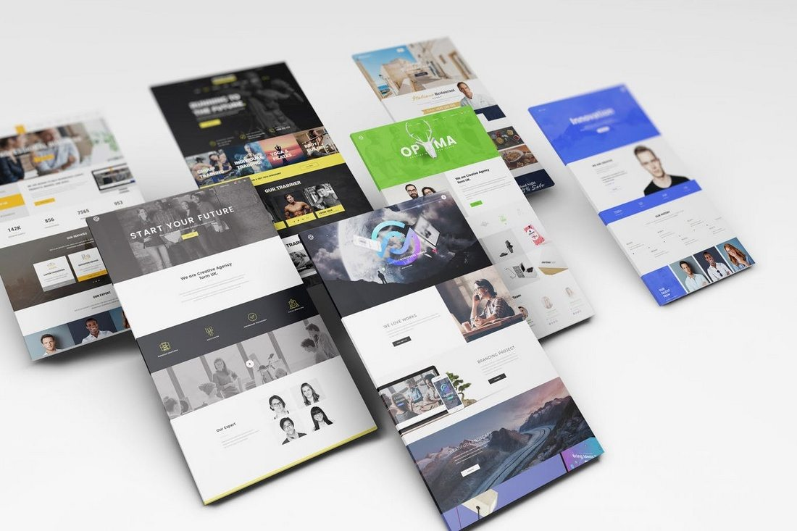

Weblapkészítés, honlapkészítés és keresőoptimalizálás, teljes beüzemeléssel. Kérj ajánlatot az új weblapodra!
Modern világunkban már kulcs szerepet tölt be egy sikeres vállalkozás életében a webes jelenlét. Manapság már mindenki az interneten keres bármit amire szüksége van legyen az információ, szolgáltatás vagy termék.
Miért engem válassz?
Weblapkészítésnél a legfontosabb szemponton az egyedi teljesen a cég arculatára szabott megjelenés továbbá kiemelten figyelek arra, hogy a weboldal minden esetben kiváló felhasználói élményt nyújtson.
Weblapkészítésnél a következőket tudom felajánlani:- Cég arculatára és az ügyfél elképzelésire szabott web design
- Modern, letisztult felület
- Keresőbarát kialakítás
- Minden eszközre optimalizált, azaz ugyanolyan jól fog mutatni mobilon, tableten mint asztali gépen
- Lehetőség a folyamatos karbantartásra képek, videók feltöltése, új aloldal készítése, kisebb változtatások
Miután elkészült az új weboldal, teljeskörű beüzemelés következik tárhely, domain kiválasztása. Weboldal feltöltése és a népszerű keresőkbe való regisztrálás.
Minden szükséges munka folyamtot én elvégzek, így neked már csak be kell írnod az új weboldalad címét és már ott is lesz, mivel mindent én végzek így rengeteg időt spórolhatunk meg, hiszen nincs várakozás a külső cégekre.
Milyen típusu weblapokat készítek?
Ez főként bemutató oldalakat foglal magába lehet az cég, személyes portfólió, termék bemutató oldal vagy bármely egyéb szolgáltatást bemutató oldal ahol általában a konverziós cél a kapcsolat felvétel.
HTML5 és CSS3 alapú egyedi programozású statikus weblapkészítés
Akkor ajánljuk, ha főként állandó tartalommal (állandó termékpaletta, szolgáltatás) rendelkező weboldalról van szó.
- Teljesen Egyedi: Mivel én készítem a teljes weblapot nulláról ezért teljesen egyedi és személyre szabott lesz.
- Gyors: Mivel az oldal nem tartalmaz felesleges funkciókat így nagyon fog betöltődni ez a mai világban kiemelt szempont.
- Keresőbarát: Az elkészült weboldal keresőoptimalizált lesz így meg fog jelenni a népszerű keresőkben.